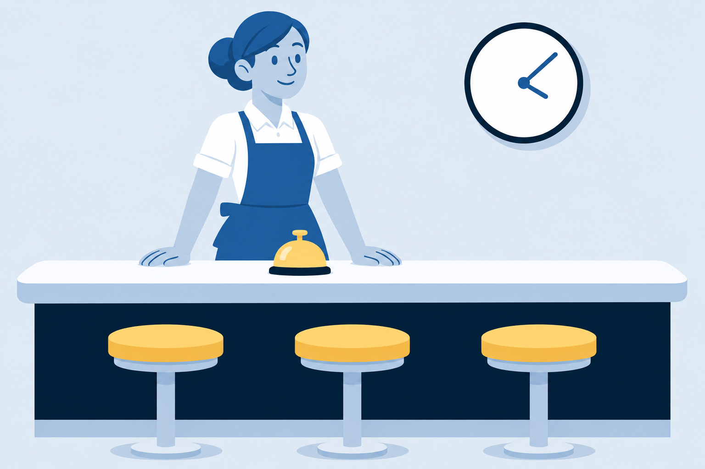
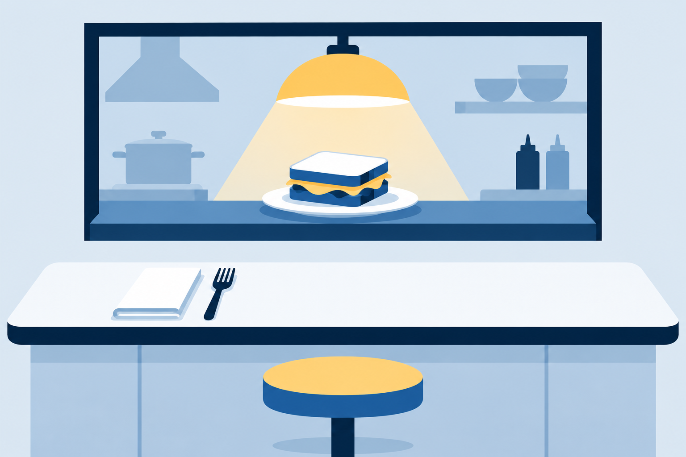
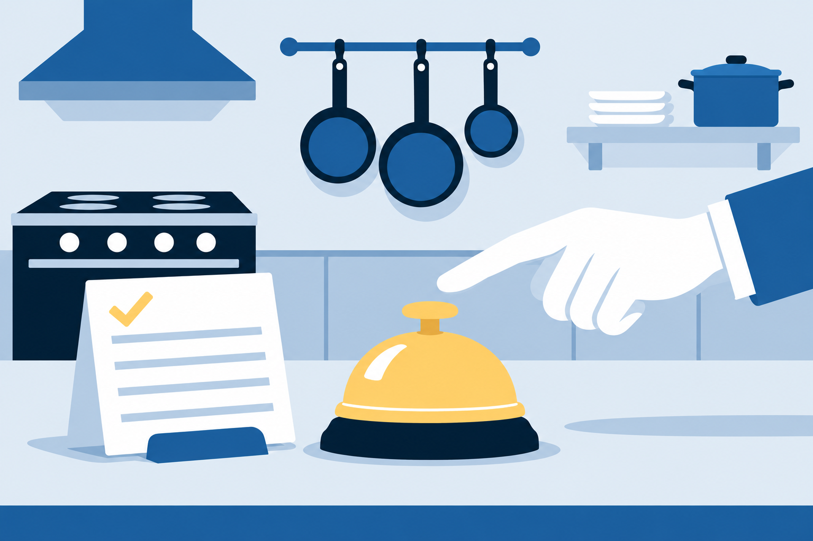

1
Exit ticket
In chat, one sentence: how does a GUI program differ from a script?
Live online. Code along in IDLE.
What is your name? Ada Hello, Ada! >>>
In chat: What does the software you use all day do instead?
command=.
This line hands your program to tkinter. From here it waits for clicks and key presses until someone closes the window.
import tkinter as tk root = tk.Tk() root.title("My First GUI") root.geometry("320x160") root.mainloop()
# ... import, root, title, size ... label = tk.Label(root, text="Click the button.") root.mainloop()

Add this line after the label, and the text appears in the window.
def say_hello(): print("Hello from the button!") # ... root, title, geometry, and the label ... button = tk.Button(root, text="Say hello", command=say_hello) button.pack()
Hello from the button!
button = tk.Button(root, text="Say hello", command=say_hello())

The function itself, for tkinter to call later.
Calls it now, once.
# ... same start, plus a prompt label ... name_entry = tk.Entry(root) name_entry.pack() # ... a Greet me button, command=greet ... result_label = tk.Label(root, text="") result_label.pack() # ... root.mainloop() stays last ...
def greet(): name = name_entry.get() if name == "": result_label.config(text="Type a name first.") else: result_label.config(text="Hello, " + name + "!")
50
50entry box
get()
"50"str
float()
50.0float
* 0.20
10.0the tip
abc
"abc"str
float()
ValueErrorraised
except
Enter a number, like 42.50label text
TIP_RATE = 0.20 def calculate(): try: bill = float(bill_entry.get()) except ValueError: result_label.config(text="Enter a number, like 42.50") return tip = bill * TIP_RATE total = bill + tip result_label.config(text=f"Tip: ${tip:.2f} Total: ${total:.2f}")
from tkinter import Tk, Label, Buttonfrom tkinter import Tk, BOTHimport tkinter as tkToday’s styleOld tutorials write Tkinter with a capital T. That is Python 2, and it fails in Python 3.
In chat, one sentence: how does a GUI program differ from a script?
Work through the three readings and the video.
Send Mr. Tagart your TRUTHFUL email. It’s worth 5 points.
The software you use all day waits for you. Now your programs can too.